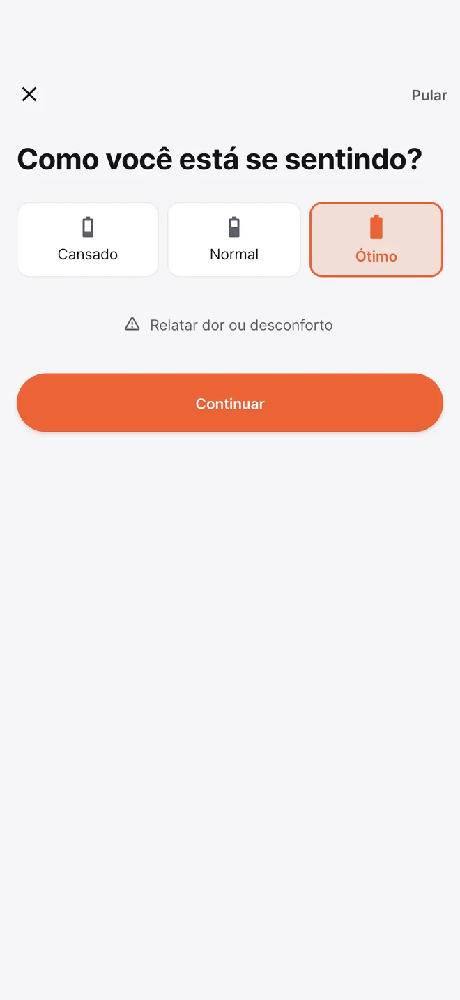
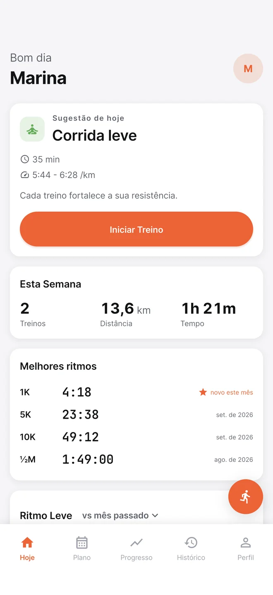
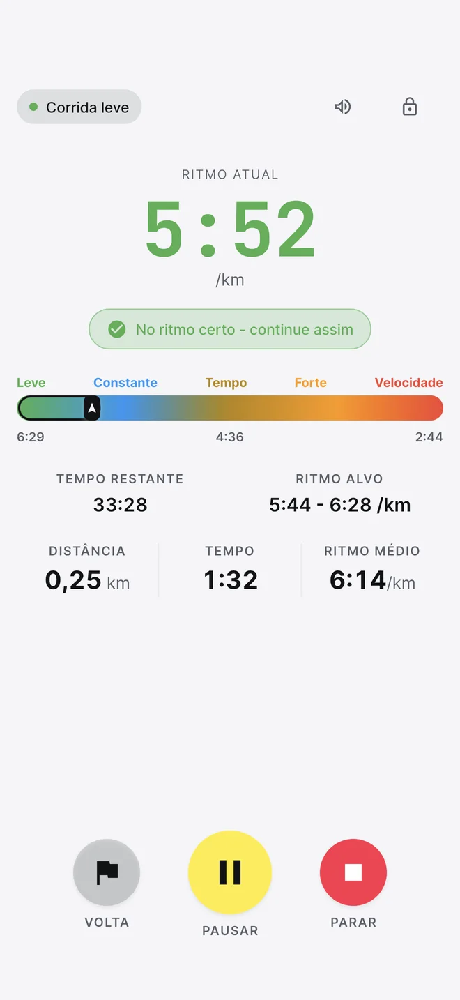
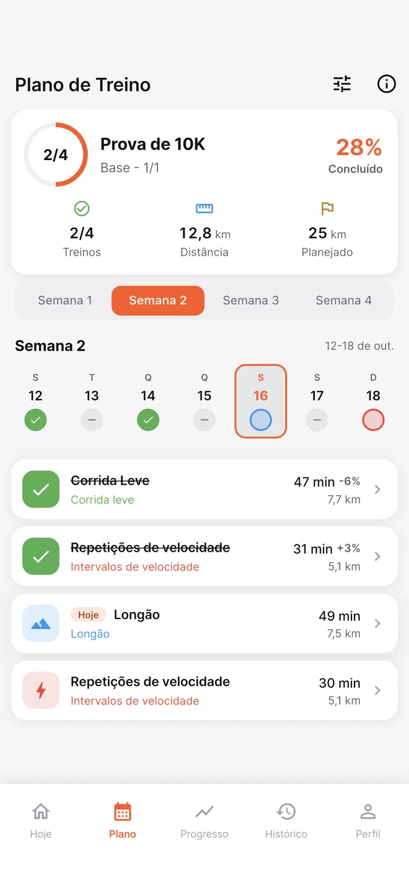
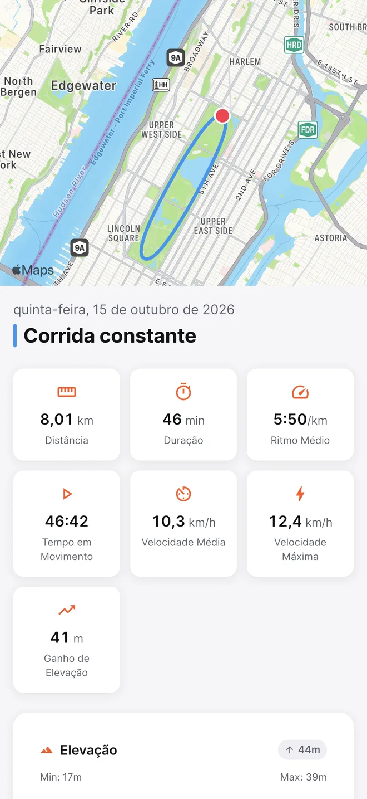
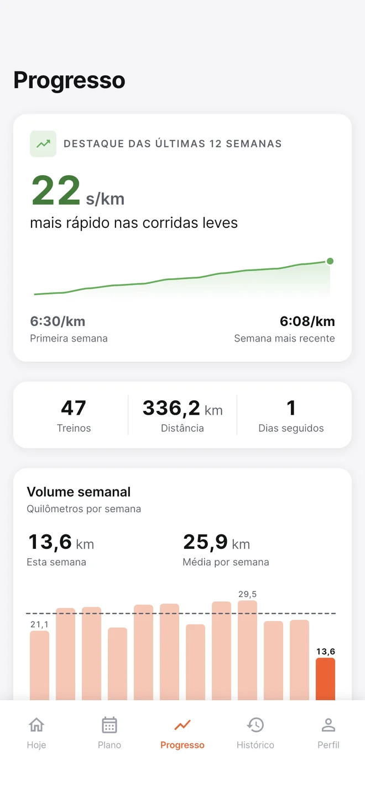

Evolua no
seu tempo.
O RunFormula guia cada treino a partir de como você está, avança quando você está pronto e guarda tudo só no seu iPhone.
Exemplo de jornada: semana a semana, a caminhada diminui e a corrida cresce, de 10 para 37 minutos correndo por sessão, com uma semana de pausa no meio.
Um guia que pergunta antes
Antes de cada treino, um check-in rápido. O treino de hoje muda de acordo com a sua resposta, e o app explica por quê.
Toque nas opções para ver o treino mudar.
Um plano que cabe na sua vida
Você escolhe os dias. Se a semana apertar, mude o treino de dia. Se a vida pedir uma pausa, o plano espera e segue com você.
- Seus dias, sua rotinaTreinos nos dias que você escolheu.
- Mude de diaTroque um treino de dia dentro da mesma semana.
- Pause quando precisarQuando você volta, as próximas semanas se ajustam.
Veja o quanto você já evoluiu
O tempo de treino cresce aos poucos, o ritmo melhora e cada recorde fica registrado. Tudo calculado no seu iPhone.
Tempo de treino por semana
Ritmo nas corridas leves
Valores de exemplo.
Suas corridas ficam com você
Não existe conta, servidor nem rastreamento. Seus treinos ficam no iPhone, com uma cópia no seu próprio iCloud Drive, que você pode desligar.
Sem contaNada de cadastro, e-mail ou senha.
Sem anúncios nem rastreamentoO RunFormula não coleta nenhum dado seu.
Cópia no seu iCloudTroque de iPhone sem perder nada. Desligue quando quiser.
Seus dados, seu formatoExporte suas corridas em GPX a qualquer momento.
O app por dentro
Check-in, treino do dia, ritmo ao vivo, plano até a prova e a sua evolução.






Perguntas frequentes
Não encontrou o que procurava? Fale com o suporte.
Nunca corri. O RunFormula serve para mim?
Sim. Você começa alternando caminhada e corrida, no ritmo do seu esforço. O tempo correndo aumenta aos poucos, e o app só avança quando você estiver pronto.
Estou treinando para uma prova. Tem plano para isso?
Sim. São planos para 5K, 10K, meia maratona e maratona, além de objetivos como manter a saúde, perder peso e ganhar velocidade. Você escolhe os dias de treino, e o plano é montado até a data da prova.
Dá para treinar na esteira?
Sim. No modo Indoor / Esteira, a distância é medida pelo contador de passos do iPhone.
Consigo importar corridas de outros apps?
Sim. Importe arquivos GPX do Garmin, do Strava ou de outros apps. Você também pode exportar as suas corridas em GPX quando quiser.
Se eu trocar de iPhone, perco meus treinos?
Não, desde que o backup no iCloud Drive esteja ligado. Ao instalar o app no iPhone novo, ele encontra a sua cópia e oferece restaurar os treinos.
O app usa quilômetros ou milhas?
Os dois. Ele começa com a unidade configurada no seu iPhone, e você pode trocar em Perfil, no item Unidades.
Em quais idiomas o app está disponível?
Português e inglês, inclusive nos avisos de voz durante a corrida.